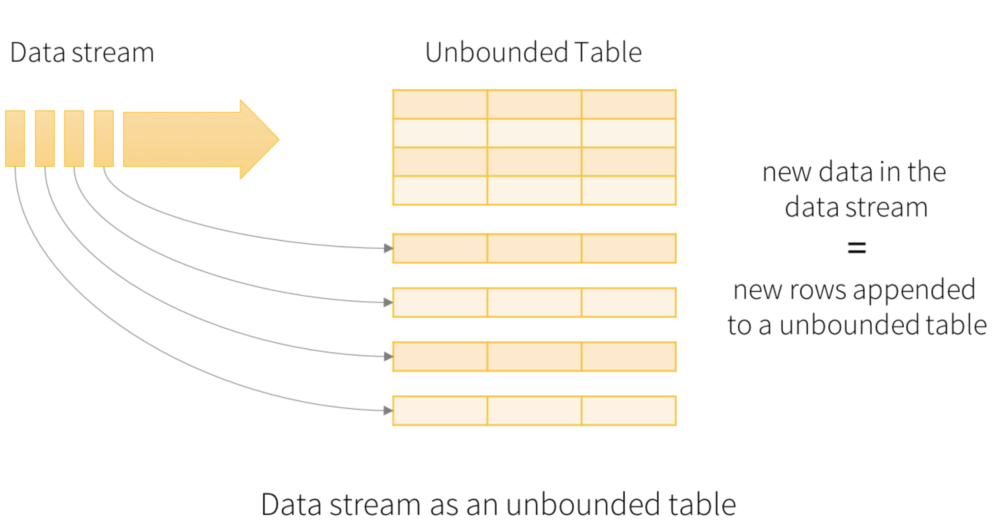

Structured Streaming

- Advantages of Structured Streaming
- Streaming code looks a lot like the equivalent of non-streaming code.
- Structured data allows spark to represent data more efficiently.
- SQL-style queries allow for query optimization opportunities and even better performance.
- More compatibility with other spark components like MLLib
1 | # Reference: https://github.com/jleetutorial/python-spark-streaming/blob/master/5_structured/1_Structured_Streaming_Demo.ipynb |
DataFrame and SQL Operations
You can easily use DataFrames and SQL operations on streaming data. You have to create a SparkSession using the SparkContext that the StreamingContext is using. Furthermore, this has to done such that it can be restarted on driver failures. This is done by creating a lazily instantiated singleton instance of SparkSession. This is shown in the following example. It modifies the earlier word count example to generate word counts using DataFrames and SQL. Each RDD is converted to a DataFrame, registered as a temporary table and then queried using SQL.[Ref: ]